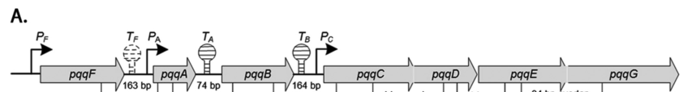

pqqC (PP_0378) encodes pyrroloquinoline-quinone synthase (EC 1.3.3.11), the terminal enzyme of the PQQ biosynthetic pathway. It catalyzes the final ring-closure plus multi-electron (eight-electron) oxidation of the late precursor AHQQ to form mature pyrroloquinoline quinone, a reaction that consumes molecular oxygen and is cofactor-independent. In P. putida KT2440, pqqC is part of the conserved pqqF-A-B-C-D-E-G cluster and is cotranscribed with pqqD-E-G; PQQ synthesis is cytosolic and supplies mature PQQ to periplasmic PQQ-dependent dehydrogenases (e.g. glucose dehydrogenase).
| GO Term | Evidence | Action | Reason |
|---|---|---|---|
|
GO:0018189
pyrroloquinoline quinone biosynthetic process
|
IEA
GO_REF:0000120 |
ACCEPT |
Summary: This biological-process annotation is correct because PqqC is the terminal pyrroloquinoline-quinone synthase in the PQQ biosynthetic pathway. Falcon deep research independently confirms PqqC catalyzes the final step of PQQ biosynthesis and places pqqC within the conserved KT2440 pqqF-A-B-C-D-E-G biosynthetic cluster, cotranscribed with pqqD-E-G.
Reason: PqqC directly produces mature PQQ from the late pathway intermediate AHQQ, and is embedded in the coordinated terminal module of the KT2440 PQQ biosynthesis operon.
Supporting Evidence:
file:PSEPK/pqqC/pqqC-uniprot.txt
PATHWAY: Cofactor biosynthesis; pyrroloquinoline quinone biosynthesis.
file:PSEPK/pqqC/pqqC-goa.tsv
GO:0018189 pyrroloquinoline quinone biosynthetic process
file:PSEPK/pqqC/pqqC-deep-research-falcon.md
**PqqC** is widely described as the enzyme catalyzing the **final step** of PQQ biosynthesis
file:PSEPK/pqqC/pqqC-deep-research-falcon.md
**pqqC** is a core member of the conserved PQQ-biosynthesis gene cluster that includes **pqqF-A-B-C-D-E-G
file:PSEPK/pqqC/pqqC-deep-research-falcon.md
RT-PCR evidence that **pqqC–pqqD–pqqE–pqqG** are **cotranscribed on one transcript**
|
|
GO:0033732
pyrroloquinoline-quinone synthase activity
|
IEA
GO_REF:0000120 |
ACCEPT |
Summary: This is the exact core molecular function for PqqC. UniProt assigns EC 1.3.3.11 and describes ring cyclization plus eight-electron oxidation generating PQQ. Falcon deep research independently confirms the reaction (AHQQ to PQQ via ring closure coupled to multi-electron oxidation using molecular oxygen), the O2/peroxide stoichiometry (3 O2 consumed, yielding 2 H2O2 + 2 H2O), and describes PqqC as a cofactorless oxidase. These details are inferred by homology/mechanistic conservation, as the catalytic step and active-site residues are strongly conserved across the PqqC family.
Reason: The enzyme name, EC 1.3.3.11 mapping, and the conserved AHQQ-to-PQQ oxidative ring-closure reaction directly support pyrroloquinoline-quinone synthase activity.
Supporting Evidence:
file:PSEPK/pqqC/pqqC-uniprot.txt
RecName: Full=Pyrroloquinoline-quinone synthase
file:PSEPK/pqqC/pqqC-uniprot.txt
Ring cyclization and eight-electron oxidation
file:PSEPK/pqqC/pqqC-goa.tsv
GO:0033732 pyrroloquinoline-quinone synthase activity
file:PSEPK/pqqC/pqqC-deep-research-falcon.md
via **ring closure** coupled to a **multi-electron oxidation** using molecular oxygen
file:PSEPK/pqqC/pqqC-deep-research-falcon.md
**3 equivalents of O\_2 consumed**, producing **2 equivalents H\_2O\_2** and **2 equivalents H\_2O** during conversion of AHQQ to PQQ
file:PSEPK/pqqC/pqqC-deep-research-falcon.md
PqqC as a **cofactorless oxidase**
|
Q: Which late PQQ precursor accumulates in a KT2440 pqqC mutant, and does it match the inferred PqqC substrate (AHQQ) from characterized homologs?
Experiment: Purify KT2440 PqqC and assay conversion of the late PQQ precursor AHQQ under oxygenated conditions, using LC-MS to track substrate depletion and PQQ formation, and quantify O2 consumption and H2O2 production to confirm the family-conserved stoichiometry.
Hypothesis: PqqC catalyzes the final oxidative cyclization step in KT2440 PQQ biosynthesis.
Type: enzyme assay and LC-MS metabolite tracking
The research report should be a detailed narrative explaining the function, biological processes, and localization of the gene product. Citations should be given for all claims.
You should prioritize authoritative reviews and primary scientific literature when conducting research. You can supplement
this with annotations you find in gene/protein databases, but these can be outdated or inaccurate.
We are specifically interested in the primary function of the gene - for enzymes, what reaction is catalyzed, and what is the substrate specificity? For transporters, what is the substrate? For structural proteins or adapters, what is the broader structural role? For signaling molecules, what is the role in the pathway.
We are interested in where in or outside the cell the gene product carries out its function.
We are also interested in the signaling or biochemical pathways in which the gene functions. We are less interested in broad pleiotropic effects, except where these elucidate the precise role.
Include evidence where possible. We are interested in both experimental evidence as well as inference from structure, evolution, or bioinformatic analysis. Precise studies should be prioritized over high-throughput, where available.
The target is pqqC (ordered locus PP_0378) from Pseudomonas putida strain KT2440, annotated as pyrroloquinoline-quinone synthase / PQQ biosynthesis protein C (EC 1.3.3.11). In P. putida KT2440, pqqC is a core member of the conserved PQQ-biosynthesis gene cluster that includes pqqF-A-B-C-D-E-G (often referred to as a pqq operon). (an2016regulationofpyrroloquinoline pages 3-5, an2016regulationofpyrroloquinoline pages 7-8, an2016regulationofpyrroloquinoline media 8ec9f5a0)
Ambiguity check: Although “pqqC” is a common bacterial gene symbol, the literature retrieved here explicitly refers to pqqC in P. putida KT2440 and/or to PqqC-family enzymes performing the final step of PQQ biosynthesis, consistent with UniProt’s PqqC-family assignment for Q88QV6. (an2016regulationofpyrroloquinoline pages 3-5, an2016regulationofpyrroloquinoline pages 7-8, rosefigura2010investigationofthe pages 12-15)
PQQ is a redox cofactor used by multiple periplasmic dehydrogenases in Gram-negative bacteria, including PQQ-dependent glucose dehydrogenase (GDH); this periplasmic oxidation system can generate organic acids (e.g., gluconate) that contribute to mineral phosphate solubilization in rhizosphere contexts. (an2016regulationofpyrroloquinoline pages 1-2, an2016studiesonregulation pages 24-29)
In P. putida KT2440, genes annotated pqqF, pqqA, pqqB, pqqC, pqqD, pqqE, pqqG occur as a physical cluster with predicted promoters/terminators and evidence of multi-transcript organization. (an2016regulationofpyrroloquinoline pages 3-5, an2016regulationofpyrroloquinoline pages 7-8, an2016regulationofpyrroloquinoline media 8ec9f5a0)
PqqC is widely described as the enzyme catalyzing the final step of PQQ biosynthesis, converting a late intermediate commonly called AHQQ into PQQ via ring closure coupled to a multi-electron oxidation using molecular oxygen. This assignment underpins the EC number 1.3.3.11 commonly associated with PqqC. (rosefigura2010investigationofthe pages 12-15, rosefigura2010investigationofthe pages 1-9)
The mechanistic/structural evidence retrieved (in an ortholog context) describes the PqqC-catalyzed reaction as:
- Substrate: AHQQ (a late-stage PQQ precursor)
- Product: PQQ
- Chemistry: ring closure + O_2-coupled eight-electron oxidation (cofactor-independent). (rosefigura2010investigationofthe pages 12-15, rosefigura2010investigationofthe pages 1-9)
A notable quantitative description of the oxidation stoichiometry is:
- 3 equivalents of O_2 consumed, producing 2 equivalents H_2O_2 and 2 equivalents H_2O during conversion of AHQQ to PQQ. (rosefigura2010investigationofthe pages 12-15)
This supports the current view of PqqC as a cofactorless oxidase capable of orchestrating substantial redox chemistry without a metal or organic cofactor. (rosefigura2010investigationofthe pages 12-15)
Structural/mechanistic observations (ortholog-derived but PqqC-family relevant) include:
- Homodimeric architecture (reported as a “perpendicular homodimer”), with a large conformational change upon PQQ binding that “closes” the active site; the 142–196 region was highlighted as moving to form the active site. (rosefigura2010investigationofthe pages 12-15)
- A set of highly conserved residues in/near the active site (18 listed in the evidence excerpt, including H84, H154, Y175, R179, etc.), consistent with a conserved catalytic core across PqqC-family proteins. (rosefigura2010investigationofthe pages 12-15)
- Mutational evidence implicating residues (e.g., H84, Y175, H154, R179) in controlling conformational state and progression through quinoid/quinol intermediates, supporting a stepwise oxidation model. (rosefigura2010investigationofthe pages 1-9)
Interpretation: For P. putida Q88QV6, these conserved structural features support functional annotation as a cytosolic PqqC-family oxidase catalyzing the terminal oxidative cyclization step of PQQ biosynthesis, with oxygen activation potentially mediated by a proteinaceous active-site environment rather than a classical cofactor. (rosefigura2010investigationofthe pages 12-15, rosefigura2010investigationofthe pages 1-9)
In P. putida KT2440, the pqq cluster spans seven genes (pqqF A B C D E G) with:
- predicted promoters upstream of pqqF, pqqA, and pqqC, and predicted terminators between some intergenic regions, consistent with a multi-transcript architecture; (an2016regulationofpyrroloquinoline pages 3-5, an2016regulationofpyrroloquinoline media 8ec9f5a0)
- RT-PCR evidence that pqqC–pqqD–pqqE–pqqG are cotranscribed on one transcript, suggesting pqqC function is embedded in a coordinated terminal module of the pathway. (an2016regulationofpyrroloquinoline pages 7-8)
Visualization (operon): The organization and predicted regulatory elements are shown in a retrieved cropped figure from An & Moe 2016. (an2016regulationofpyrroloquinoline media 8ec9f5a0)
In a peer-reviewed KT2440 study, both PQQ levels and PQQ-dependent GDH activity varied substantially with growth conditions.
Carbon sources: PQQ concentrations (µM) were reported as ~0.083 (LB), 0.532 (glucose), 0.385 (glycerol), and 0.140 (citrate), alongside corresponding changes in GDH specific activity. (an2016regulationofpyrroloquinoline pages 3-5)
Soluble phosphate: Under NBRIP medium conditions, PQQ production increased under low/zero phosphate; one dataset reported 0.861 ± 0.007 µM PQQ under no added soluble phosphate, compared with 0.488 ± 0.014 µM under a high soluble phosphate condition. (an2016studiesonregulation pages 62-67, an2016regulationofpyrroloquinoline pages 7-8)
Expression: In the same regulatory context, gcd and pqq gene expression (including pqq genes in the operon) was reported as approximately ~1.5- to 3-fold higher under zero-soluble-phosphate conditions versus high phosphate. (an2016regulationofpyrroloquinoline pages 7-8)
Visualization (quantitative tables and expression): Carbon-source and phosphate-dependent PQQ measurements, and expression trends for genes including pqqC, are available as retrieved table/figure crops. (an2016regulationofpyrroloquinoline media 7618facf, an2016regulationofpyrroloquinoline media 38966689)
The KT2440 regulatory study focuses on periplasmic PQQ-dependent GDH activity, emphasizing that PQQ is required in the periplasm for GDH activity. (an2016regulationofpyrroloquinoline pages 1-2)
Mechanistic literature notes that PQQ formation is considered cytosolic, with subsequent utilization by periplasmic dehydrogenases (and historical discussion that another pqq gene product had been proposed as a transporter). (rosefigura2010investigationofthe pages 12-15)
Functional localization conclusion (annotation-level): For UniProt Q88QV6 (PqqC), the best-supported inference from the retrieved evidence is that PqqC functions in the cytosol as part of the PQQ biosynthetic pathway, enabling downstream periplasmic PQQ-dependent dehydrogenase reactions by supplying mature PQQ. (rosefigura2010investigationofthe pages 12-15, an2016regulationofpyrroloquinoline pages 1-2)
Recent genomics-focused work increasingly treats the pqq gene cluster (particularly pqqC) as a genetic marker for phosphate-solubilizing potential across diverse bacterial isolates.
A 2024 study analyzing genomes of phosphate-solubilizing bacteria reports that identifying the pqq gene cluster, particularly pqqC, is useful as a marker for phosphate-solubilization capacity and links it to production of organic acids such as 2-keto-D-gluconic acid over cultivation. (No KT2440-specific biochemistry for PqqC is provided, but it reflects current applied usage of the annotation.) ()
A 2023 review on phosphate-solubilizing bacteria explicitly includes pqqC in the gene set associated with PQQ-related solubilization mechanisms and summarizes gene-mediated acidolysis concepts used in agricultural microbiology. ()
A 2024 study in Pseudomonas taetrolens highlights that multiple lactose-oxidizing enzymes are PQQ-dependent and notes that disruption of PQQ synthesis genes such as pqqC affects the phenotype, reinforcing the importance of PQQ biosynthesis (including PqqC) for periplasmic oxidation-based bioprocesses. ()
The PQQ system is widely leveraged (conceptually and practically) in screening/engineering phosphate-solubilizing bacteria (PSB) because PQQ-dependent periplasmic oxidation can drive organic acid production that increases inorganic phosphate availability. Marker-based approaches that track pqqC (as part of a pqq cluster) are now common in applied microbiome/agriculture research. (an2016studiesonregulation pages 24-29)
For P. putida KT2440 specifically, the pqq system is experimentally connected to periplasmic GDH activity and phosphate solubilization. This gives a practical handle for engineering or controlling periplasmic oxidation capacity via genetic/regulatory control of pqq cluster expression and PQQ availability. (an2016regulationofpyrroloquinoline pages 1-2, an2016regulationofpyrroloquinoline pages 3-5)
The KT2440 study reports condition-dependent PQQ concentrations in the ~0.08–0.53 µM range across carbon sources and up to ~0.86 µM under no soluble phosphate (with parallel increases in GDH specific activity). (an2016regulationofpyrroloquinoline pages 3-5, an2016studiesonregulation pages 62-67, an2016regulationofpyrroloquinoline pages 7-8)
PqqC-family evidence reports the final-step conversion AHQQ→PQQ consumes 3 O_2 and produces 2 H_2O_2 + 2 H_2O (per turnover as described). (rosefigura2010investigationofthe pages 12-15)
| Experimental variable | Condition | PQQ concentration (µM) | GDH specific activity | Reported expression change |
|---|---|---|---|---|
| Carbon source | LB medium | 0.083 ± 0.012 | 857.58 ± 63.85 | pqqC-pqqD-pqqE-pqqG transcript detected; highest overall intergenic transcript signal among tested carbon sources (an2016regulationofpyrroloquinoline pages 3-5, an2016regulationofpyrroloquinoline pages 7-8) |
| Carbon source | Glucose | 0.532 ± 0.017 | 1100.00 ± 15.75 | High PQQ/GDH state under glucose as sole carbon source (an2016regulationofpyrroloquinoline pages 1-2, an2016regulationofpyrroloquinoline pages 3-5) |
| Carbon source | Glycerol | 0.385 ± 0.012 | 890.91 ± 18.18 | Lowest CD/DE/EG intergenic transcript signal among tested carbon sources (an2016regulationofpyrroloquinoline pages 3-5, an2016regulationofpyrroloquinoline pages 7-8) |
| Carbon source | Citrate | 0.140 ± 0.012 | 787.88 ± 54.80 | Lower PQQ/GDH than glucose or glycerol (an2016regulationofpyrroloquinoline pages 3-5) |
| Soluble phosphate | No P | 0.861 ± 0.007 | 1809.01 ± 7.42 | gcd and pqq gene expression ~1.5- to 3-fold higher than in high-soluble-phosphate condition (an2016studiesonregulation pages 62-67, an2016regulationofpyrroloquinoline pages 7-8) |
| Soluble phosphate | Low P (1 mM) | 0.633 ± 0.013 | not reported in retrieved excerpt | gcd and pqq gene expression induced relative to high P; exact fold not separately reported in retrieved excerpt (an2016studiesonregulation pages 62-67, an2016regulationofpyrroloquinoline pages 7-8) |
| Soluble phosphate | High P | 0.488 ± 0.014 | not reported in retrieved excerpt | Reference condition for ~1.5- to 3-fold lower gcd/pqq expression versus no-P condition (an2016studiesonregulation pages 62-67, an2016regulationofpyrroloquinoline pages 7-8) |
Table: This table compiles the key quantitative measurements reported for the pqqC/PQQ-associated system in Pseudomonas putida KT2440 from An & Moe 2016, including carbon-source and phosphate effects on PQQ levels, GDH activity, and expression trends.
Lee SS, et al. All lactose-oxidizing enzymes of Pseudomonas taetrolens… are PQQ-dependent enzymes. International Microbiology (Jan 2024 online/early; journal issue 2024). https://doi.org/10.1007/s10123-023-00477-4 (bioprocess phenotype context) ()
RoseFigura JM. Investigation of the structure and mechanism of a PQQ biosynthetic pathway component, PqqC… (2010; dissertation/monograph-style source as retrieved). (mechanism/structure/stoichiometry evidence used for PqqC-family function) (rosefigura2010investigationofthe pages 12-15, rosefigura2010investigationofthe pages 1-9)
References
(an2016regulationofpyrroloquinoline pages 3-5): Ran An and Luke A. Moe. Regulation of pyrroloquinoline quinone-dependent glucose dehydrogenase activity in the model rhizosphere-dwelling bacterium pseudomonas putida kt2440. Applied and Environmental Microbiology, 82:4955-4964, Aug 2016. URL: https://doi.org/10.1128/aem.00813-16, doi:10.1128/aem.00813-16. This article has 164 citations and is from a peer-reviewed journal.
(an2016regulationofpyrroloquinoline pages 7-8): Ran An and Luke A. Moe. Regulation of pyrroloquinoline quinone-dependent glucose dehydrogenase activity in the model rhizosphere-dwelling bacterium pseudomonas putida kt2440. Applied and Environmental Microbiology, 82:4955-4964, Aug 2016. URL: https://doi.org/10.1128/aem.00813-16, doi:10.1128/aem.00813-16. This article has 164 citations and is from a peer-reviewed journal.
(an2016regulationofpyrroloquinoline media 8ec9f5a0): Ran An and Luke A. Moe. Regulation of pyrroloquinoline quinone-dependent glucose dehydrogenase activity in the model rhizosphere-dwelling bacterium pseudomonas putida kt2440. Applied and Environmental Microbiology, 82:4955-4964, Aug 2016. URL: https://doi.org/10.1128/aem.00813-16, doi:10.1128/aem.00813-16. This article has 164 citations and is from a peer-reviewed journal.
(rosefigura2010investigationofthe pages 12-15): JM RoseFigura. Investigation of the structure and mechanism of a pqq biosynthetic pathway component, pqqc, and a bioinformatics analysis of potential pqq producing …. Unknown journal, 2010.
(an2016regulationofpyrroloquinoline pages 1-2): Ran An and Luke A. Moe. Regulation of pyrroloquinoline quinone-dependent glucose dehydrogenase activity in the model rhizosphere-dwelling bacterium pseudomonas putida kt2440. Applied and Environmental Microbiology, 82:4955-4964, Aug 2016. URL: https://doi.org/10.1128/aem.00813-16, doi:10.1128/aem.00813-16. This article has 164 citations and is from a peer-reviewed journal.
(an2016studiesonregulation pages 24-29): Ran An. Studies on regulation of pqq-dependent phosphate solubilization among rhizosphere dwelling bacteria. ArXiv, Jan 2016. URL: https://doi.org/10.13023/etd.2016.408, doi:10.13023/etd.2016.408. This article has 7 citations.
(rosefigura2010investigationofthe pages 1-9): JM RoseFigura. Investigation of the structure and mechanism of a pqq biosynthetic pathway component, pqqc, and a bioinformatics analysis of potential pqq producing …. Unknown journal, 2010.
(an2016studiesonregulation pages 62-67): Ran An. Studies on regulation of pqq-dependent phosphate solubilization among rhizosphere dwelling bacteria. ArXiv, Jan 2016. URL: https://doi.org/10.13023/etd.2016.408, doi:10.13023/etd.2016.408. This article has 7 citations.
(an2016regulationofpyrroloquinoline media 7618facf): Ran An and Luke A. Moe. Regulation of pyrroloquinoline quinone-dependent glucose dehydrogenase activity in the model rhizosphere-dwelling bacterium pseudomonas putida kt2440. Applied and Environmental Microbiology, 82:4955-4964, Aug 2016. URL: https://doi.org/10.1128/aem.00813-16, doi:10.1128/aem.00813-16. This article has 164 citations and is from a peer-reviewed journal.
(an2016regulationofpyrroloquinoline media 38966689): Ran An and Luke A. Moe. Regulation of pyrroloquinoline quinone-dependent glucose dehydrogenase activity in the model rhizosphere-dwelling bacterium pseudomonas putida kt2440. Applied and Environmental Microbiology, 82:4955-4964, Aug 2016. URL: https://doi.org/10.1128/aem.00813-16, doi:10.1128/aem.00813-16. This article has 164 citations and is from a peer-reviewed journal.

id: Q88QV6
gene_symbol: pqqC
product_type: PROTEIN
status: DRAFT
taxon:
id: NCBITaxon:160488
label: Pseudomonas putida (strain ATCC 47054 / DSM 6125 / CFBP 8728 / NCIMB 11950 / KT2440)
description: pqqC (PP_0378) encodes pyrroloquinoline-quinone synthase (EC 1.3.3.11), the
terminal enzyme of the PQQ biosynthetic pathway. It catalyzes the final ring-closure plus
multi-electron (eight-electron) oxidation of the late precursor AHQQ to form mature
pyrroloquinoline quinone, a reaction that consumes molecular oxygen and is cofactor-independent.
In P. putida KT2440, pqqC is part of the conserved pqqF-A-B-C-D-E-G cluster and is
cotranscribed with pqqD-E-G; PQQ synthesis is cytosolic and supplies mature PQQ to
periplasmic PQQ-dependent dehydrogenases (e.g. glucose dehydrogenase).
existing_annotations:
- term:
id: GO:0018189
label: pyrroloquinoline quinone biosynthetic process
evidence_type: IEA
original_reference_id: GO_REF:0000120
review:
summary: This biological-process annotation is correct because PqqC is the terminal pyrroloquinoline-quinone
synthase in the PQQ biosynthetic pathway. Falcon deep research independently confirms PqqC
catalyzes the final step of PQQ biosynthesis and places pqqC within the conserved KT2440
pqqF-A-B-C-D-E-G biosynthetic cluster, cotranscribed with pqqD-E-G.
action: ACCEPT
reason: PqqC directly produces mature PQQ from the late pathway intermediate AHQQ, and is
embedded in the coordinated terminal module of the KT2440 PQQ biosynthesis operon.
supported_by:
- reference_id: file:PSEPK/pqqC/pqqC-uniprot.txt
supporting_text: 'PATHWAY: Cofactor biosynthesis; pyrroloquinoline quinone biosynthesis.'
- reference_id: file:PSEPK/pqqC/pqqC-goa.tsv
supporting_text: "GO:0018189\tpyrroloquinoline quinone biosynthetic process"
- reference_id: file:PSEPK/pqqC/pqqC-deep-research-falcon.md
supporting_text: '**PqqC** is widely described as the enzyme catalyzing the **final step**
of PQQ biosynthesis'
- reference_id: file:PSEPK/pqqC/pqqC-deep-research-falcon.md
supporting_text: '**pqqC** is a core member of the conserved PQQ-biosynthesis gene cluster
that includes **pqqF-A-B-C-D-E-G'
- reference_id: file:PSEPK/pqqC/pqqC-deep-research-falcon.md
supporting_text: RT-PCR evidence that **pqqC–pqqD–pqqE–pqqG** are **cotranscribed on one transcript**
- term:
id: GO:0033732
label: pyrroloquinoline-quinone synthase activity
evidence_type: IEA
original_reference_id: GO_REF:0000120
review:
summary: This is the exact core molecular function for PqqC. UniProt assigns EC 1.3.3.11 and describes
ring cyclization plus eight-electron oxidation generating PQQ. Falcon deep research independently
confirms the reaction (AHQQ to PQQ via ring closure coupled to multi-electron oxidation using
molecular oxygen), the O2/peroxide stoichiometry (3 O2 consumed, yielding 2 H2O2 + 2 H2O), and
describes PqqC as a cofactorless oxidase. These details are inferred by homology/mechanistic
conservation, as the catalytic step and active-site residues are strongly conserved across the
PqqC family.
action: ACCEPT
reason: The enzyme name, EC 1.3.3.11 mapping, and the conserved AHQQ-to-PQQ oxidative ring-closure
reaction directly support pyrroloquinoline-quinone synthase activity.
supported_by:
- reference_id: file:PSEPK/pqqC/pqqC-uniprot.txt
supporting_text: 'RecName: Full=Pyrroloquinoline-quinone synthase'
- reference_id: file:PSEPK/pqqC/pqqC-uniprot.txt
supporting_text: Ring cyclization and eight-electron oxidation
- reference_id: file:PSEPK/pqqC/pqqC-goa.tsv
supporting_text: "GO:0033732\tpyrroloquinoline-quinone synthase activity"
- reference_id: file:PSEPK/pqqC/pqqC-deep-research-falcon.md
supporting_text: via **ring closure** coupled to a **multi-electron oxidation** using molecular oxygen
- reference_id: file:PSEPK/pqqC/pqqC-deep-research-falcon.md
supporting_text: '**3 equivalents of O\_2 consumed**, producing **2 equivalents H\_2O\_2** and
**2 equivalents H\_2O** during conversion of AHQQ to PQQ'
- reference_id: file:PSEPK/pqqC/pqqC-deep-research-falcon.md
supporting_text: PqqC as a **cofactorless oxidase**
references:
- id: GO_REF:0000120
title: Combined Automated Annotation using Multiple IEA Methods
findings: []
- id: file:PSEPK/pqqC/pqqC-uniprot.txt
title: UniProtKB entry for pqqC (Pyrroloquinoline-quinone synthase)
findings:
- statement: UniProt assigns PqqC the recommended name Pyrroloquinoline-quinone synthase with
EC 1.3.3.11.
supporting_text: 'RecName: Full=Pyrroloquinoline-quinone synthase'
reference_section_type: OTHER
- statement: UniProt describes the catalyzed reaction as ring cyclization and eight-electron
oxidation of the late PQQ precursor to PQQ.
supporting_text: Ring cyclization and eight-electron oxidation of 3a-(2-amino-
reference_section_type: OTHER
- statement: UniProt places PqqC in the pyrroloquinoline quinone biosynthesis pathway.
supporting_text: 'PATHWAY: Cofactor biosynthesis; pyrroloquinoline quinone biosynthesis.'
reference_section_type: OTHER
- id: file:PSEPK/pqqC/pqqC-goa.tsv
title: QuickGO GOA annotations for pqqC
findings:
- statement: GOA records the PQQ biosynthetic process annotation for pqqC.
supporting_text: "GO:0018189\tpyrroloquinoline quinone biosynthetic process"
reference_section_type: OTHER
- statement: GOA records the pyrroloquinoline-quinone synthase activity annotation for pqqC.
supporting_text: "GO:0033732\tpyrroloquinoline-quinone synthase activity"
reference_section_type: OTHER
- id: file:PSEPK/pqqC/pqqC-deep-research-falcon.md
title: Falcon deep research report for pqqC (Q88QV6, P. putida KT2440)
findings:
- statement: PqqC is the enzyme catalyzing the final step of PQQ biosynthesis, converting the
late intermediate AHQQ into PQQ.
supporting_text: '**PqqC** is widely described as the enzyme catalyzing the **final step**
of PQQ biosynthesis'
reference_section_type: OTHER
- statement: The terminal PqqC reaction proceeds by ring closure coupled to a multi-electron
oxidation using molecular oxygen, and is cofactor-independent.
supporting_text: via **ring closure** coupled to a **multi-electron oxidation** using molecular oxygen
reference_section_type: OTHER
- statement: The AHQQ-to-PQQ conversion consumes 3 equivalents of O2 and produces 2 H2O2 and
2 H2O, consistent with the UniProt and GO reaction stoichiometry.
supporting_text: '**3 equivalents of O\_2 consumed**, producing **2 equivalents H\_2O\_2** and
**2 equivalents H\_2O** during conversion of AHQQ to PQQ'
reference_section_type: OTHER
- statement: PqqC is a cofactorless oxidase capable of substantial redox chemistry without a
metal or organic cofactor.
supporting_text: PqqC as a **cofactorless oxidase**
reference_section_type: OTHER
- statement: PqqC adopts a homodimeric architecture with a large conformational change upon PQQ
binding that closes the active site.
supporting_text: a large **conformational change** upon PQQ binding that
reference_section_type: OTHER
- statement: In P. putida KT2440, pqqC is a core member of the conserved PQQ-biosynthesis gene
cluster pqqF-A-B-C-D-E-G.
supporting_text: '**pqqC** is a core member of the conserved PQQ-biosynthesis gene cluster
that includes **pqqF-A-B-C-D-E-G'
reference_section_type: OTHER
- statement: RT-PCR evidence shows pqqC-pqqD-pqqE-pqqG are cotranscribed on a single transcript,
placing pqqC in a coordinated terminal module of the pathway.
supporting_text: RT-PCR evidence that **pqqC–pqqD–pqqE–pqqG** are **cotranscribed on one transcript**
reference_section_type: OTHER
- statement: PQQ formation is considered cytosolic, with subsequent utilization by periplasmic
dehydrogenases such as PQQ-dependent glucose dehydrogenase.
supporting_text: PQQ formation is considered **cytosolic**, with subsequent utilization by
**periplasmic dehydrogenases**
reference_section_type: OTHER
- statement: KT2440-specific PqqC biochemistry is inferred by homology and mechanistic conservation;
the catalytic step and active-site residues are strongly conserved across the PqqC family.
supporting_text: inference by homology/mechanistic conservation
reference_section_type: OTHER
core_functions:
- description: PqqC is the pyrroloquinoline-quinone synthase that catalyzes the terminal oxidative
ring closure of the late PQQ precursor AHQQ to form mature pyrroloquinoline quinone, consuming
molecular oxygen in a cofactor-independent reaction.
molecular_function:
id: GO:0033732
label: pyrroloquinoline-quinone synthase activity
directly_involved_in:
- id: GO:0018189
label: pyrroloquinoline quinone biosynthetic process
supported_by:
- reference_id: file:PSEPK/pqqC/pqqC-uniprot.txt
supporting_text: 'RecName: Full=Pyrroloquinoline-quinone synthase'
- reference_id: file:PSEPK/pqqC/pqqC-uniprot.txt
supporting_text: Ring cyclization and eight-electron oxidation
- reference_id: file:PSEPK/pqqC/pqqC-deep-research-falcon.md
supporting_text: '**PqqC** is widely described as the enzyme catalyzing the **final step**
of PQQ biosynthesis'
- reference_id: file:PSEPK/pqqC/pqqC-deep-research-falcon.md
supporting_text: via **ring closure** coupled to a **multi-electron oxidation** using molecular oxygen
- reference_id: file:PSEPK/pqqC/pqqC-deep-research-falcon.md
supporting_text: PqqC as a **cofactorless oxidase**
proposed_new_terms: []
suggested_questions:
- question: Which late PQQ precursor accumulates in a KT2440 pqqC mutant, and does it match the inferred
PqqC substrate (AHQQ) from characterized homologs?
suggested_experiments:
- hypothesis: PqqC catalyzes the final oxidative cyclization step in KT2440 PQQ biosynthesis.
description: Purify KT2440 PqqC and assay conversion of the late PQQ precursor AHQQ under oxygenated
conditions, using LC-MS to track substrate depletion and PQQ formation, and quantify O2 consumption
and H2O2 production to confirm the family-conserved stoichiometry.
experiment_type: enzyme assay and LC-MS metabolite tracking
{kind=link}